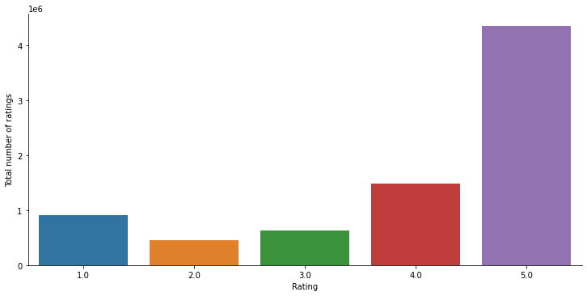

Predicting Ratings using TFRS¶
Training a top-k retrieval model using Tensorflow Recommenders library on Amazon Electronics dataset.
Setup¶
!pip install tensorflow-recommenders
!pip install surprise
import os
import pprint
import tempfile
from typing import Dict, Text
import seaborn as sns
import numpy as np
import tensorflow as tf
import tensorflow_recommenders as tfrs
import matplotlib.pyplot as plt
import pandas as pd
from surprise import Reader
from surprise.model_selection import train_test_split
from surprise import Dataset
!pip install -q watermark
%reload_ext watermark
%watermark -m -iv -u -t -d
Loading dataset¶
!wget http://snap.stanford.edu/data/amazon/productGraph/categoryFiles/ratings_Electronics.csv
df = pd.read_csv('ratings_Electronics.csv', names=['userId', 'productId','Rating','timestamp'])
df.head()
| userId | productId | Rating | timestamp | |
|---|---|---|---|---|
| 0 | AKM1MP6P0OYPR | 0132793040 | 5.0 | 1365811200 |
| 1 | A2CX7LUOHB2NDG | 0321732944 | 5.0 | 1341100800 |
| 2 | A2NWSAGRHCP8N5 | 0439886341 | 1.0 | 1367193600 |
| 3 | A2WNBOD3WNDNKT | 0439886341 | 3.0 | 1374451200 |
| 4 | A1GI0U4ZRJA8WN | 0439886341 | 1.0 | 1334707200 |
df.dropna(inplace=True)
df.head()
| userId | productId | Rating | timestamp | |
|---|---|---|---|---|
| 0 | AKM1MP6P0OYPR | 0132793040 | 5.0 | 1365811200 |
| 1 | A2CX7LUOHB2NDG | 0321732944 | 5.0 | 1341100800 |
| 2 | A2NWSAGRHCP8N5 | 0439886341 | 1.0 | 1367193600 |
| 3 | A2WNBOD3WNDNKT | 0439886341 | 3.0 | 1374451200 |
| 4 | A1GI0U4ZRJA8WN | 0439886341 | 1.0 | 1334707200 |
df.info()
<class 'pandas.core.frame.DataFrame'>
Int64Index: 7824482 entries, 0 to 7824481
Data columns (total 4 columns):
# Column Dtype
--- ------ -----
0 userId object
1 productId object
2 Rating float64
3 timestamp int64
dtypes: float64(1), int64(1), object(2)
memory usage: 298.5+ MB
df.describe()
| Rating | timestamp | |
|---|---|---|
| count | 7.824482e+06 | 7.824482e+06 |
| mean | 4.012337e+00 | 1.338178e+09 |
| std | 1.380910e+00 | 6.900426e+07 |
| min | 1.000000e+00 | 9.127296e+08 |
| 25% | 3.000000e+00 | 1.315354e+09 |
| 50% | 5.000000e+00 | 1.361059e+09 |
| 75% | 5.000000e+00 | 1.386115e+09 |
| max | 5.000000e+00 | 1.406074e+09 |
print('Minimum rating is: %d' %(df.Rating.min()))
print('Maximum rating is: %d' %(df.Rating.max()))
Minimum rating is: 1
Maximum rating is: 5
g = sns.catplot(x="Rating", data=df, aspect=2.0, kind='count')
g.set_ylabels("Total number of ratings")
plt.show()

Preprocessing¶
df.drop(['timestamp'], axis=1, inplace=True)
num_of_rated_products_per_user = df.groupby(by='userId')['Rating'].count().sort_values(ascending=False)
num_of_rated_products_per_user.head()
userId
A5JLAU2ARJ0BO 520
ADLVFFE4VBT8 501
A3OXHLG6DIBRW8 498
A6FIAB28IS79 431
A680RUE1FDO8B 406
Name: Rating, dtype: int64
new_df = df.sample(frac=0.1).groupby("productId").filter(lambda x:x['Rating'].count() >=50)
new_df.describe(include='all')
| userId | productId | Rating | |
|---|---|---|---|
| count | 224220 | 224220 | 224220.000000 |
| unique | 212344 | 1920 | NaN |
| top | AN81JUYW2SL24 | B0074BW614 | NaN |
| freq | 12 | 1771 | NaN |
| mean | NaN | NaN | 4.169374 |
| std | NaN | NaN | 1.288526 |
| min | NaN | NaN | 1.000000 |
| 25% | NaN | NaN | 4.000000 |
| 50% | NaN | NaN | 5.000000 |
| 75% | NaN | NaN | 5.000000 |
| max | NaN | NaN | 5.000000 |
Train/test split¶
df = new_df.copy()
interactions_dict = df.drop(['Rating'],axis=1)
interactions_dict = {name: np.array(value) for name, value in interactions_dict.items()}
interactions = tf.data.Dataset.from_tensor_slices(interactions_dict)
items_dict = df[['productId']].drop_duplicates()
items_dict = {name: np.array(value) for name, value in items_dict.items()}
items = tf.data.Dataset.from_tensor_slices(items_dict)
interactions = interactions.map(lambda x: {
'userId' : x['userId'],
'productId' : x['productId'],
})
items = items.map(lambda x: x['productId'])
### get unique item and user id's as a lookup table
unique_item_titles = np.unique(np.concatenate(list(items.batch(1000))))
unique_user_ids = np.unique(np.concatenate(list(interactions.batch(1_000).map(lambda x: x["userId"]))))
# Randomly shuffle data and split between train and test.
tf.random.set_seed(42)
shuffled = interactions.shuffle(200_000, seed=42, reshuffle_each_iteration=False)
train = shuffled.take(180_000)
test = shuffled.skip(180_000).take(20_000)
Defining model architecture¶
class RetailModel(tfrs.Model):
def __init__(self, user_model, item_model):
super().__init__()
### Candidate model (item)
### This is Keras preprocessing layers to first convert user ids to integers,
### and then convert those to user embeddings via an Embedding layer.
### We use the list of unique user ids we computed earlier as a vocabulary:
item_model = tf.keras.Sequential([
tf.keras.layers.experimental.preprocessing.StringLookup(
vocabulary=unique_item_titles, mask_token=None),
tf.keras.layers.Embedding(len(unique_item_titles) + 1, embedding_dimension)
])
### we pass the embedding layer into item model
self.item_model: tf.keras.Model = item_model
### Query model (users)
user_model = tf.keras.Sequential([
tf.keras.layers.experimental.preprocessing.StringLookup(
vocabulary=unique_user_ids, mask_token=None),
# We add an additional embedding to account for unknown tokens.
tf.keras.layers.Embedding(len(unique_user_ids) + 1, embedding_dimension)
])
self.user_model: tf.keras.Model = user_model
### for retrieval model. we take top-k accuracy as metrics
metrics = tfrs.metrics.FactorizedTopK(
candidates=items.batch(128).map(item_model))
# define the task, which is retrieval )
task = tfrs.tasks.Retrieval(
metrics=metrics
)
self.task: tf.keras.layers.Layer = task
def compute_loss(self, features: Dict[Text, tf.Tensor], training=False) -> tf.Tensor:
# We pick out the user features and pass them into the user model.
user_embeddings = self.user_model(features["userId"])
# And pick out the movie features and pass them into the movie model,
# getting embeddings back.
positive_movie_embeddings = self.item_model(features["productId"])
# The task computes the loss and the metrics.
return self.task(user_embeddings, positive_movie_embeddings)
Fitting and evaluating¶
### we choose the dimensionality of the query and candicate representation.
embedding_dimension = 32
## we pass the model, which is the same model we created in the query and candidate tower, into the model
item_model = tf.keras.Sequential([
tf.keras.layers.experimental.preprocessing.StringLookup(
vocabulary=unique_item_titles, mask_token=None),
tf.keras.layers.Embedding(len(unique_item_titles) + 1, embedding_dimension)
])
user_model = tf.keras.Sequential([
tf.keras.layers.experimental.preprocessing.StringLookup(
vocabulary=unique_user_ids, mask_token=None),
# We add an additional embedding to account for unknown tokens.
tf.keras.layers.Embedding(len(unique_user_ids) + 1, embedding_dimension)
])
model = RetailModel(user_model, item_model)
# a smaller learning rate may make the model move slower and prone to overfitting, so we stick to 0.1
# other optimizers, such as SGD and Adam, are listed here https://www.tensorflow.org/api_docs/python/tf/keras/optimizers
model.compile(optimizer=tf.keras.optimizers.Adagrad(learning_rate=0.1))
cached_train = train.shuffle(100_000).batch(8192).cache()
cached_test = test.batch(4096).cache()
## fit the model with ten epochs
model_hist = model.fit(cached_train, epochs=10)
#evaluate the model
model.evaluate(cached_test, return_dict=True)
Epoch 1/10
WARNING:tensorflow:From /usr/local/lib/python3.7/dist-packages/tensorflow/python/ops/array_ops.py:5049: calling gather (from tensorflow.python.ops.array_ops) with validate_indices is deprecated and will be removed in a future version.
Instructions for updating:
The `validate_indices` argument has no effect. Indices are always validated on CPU and never validated on GPU.
22/22 [==============================] - 60s 3s/step - factorized_top_k/top_1_categorical_accuracy: 0.0012 - factorized_top_k/top_5_categorical_accuracy: 0.0069 - factorized_top_k/top_10_categorical_accuracy: 0.0119 - factorized_top_k/top_50_categorical_accuracy: 0.0417 - factorized_top_k/top_100_categorical_accuracy: 0.0723 - loss: 73623.2884 - regularization_loss: 0.0000e+00 - total_loss: 73623.2884
Epoch 2/10
22/22 [==============================] - 58s 3s/step - factorized_top_k/top_1_categorical_accuracy: 0.1111 - factorized_top_k/top_5_categorical_accuracy: 0.3763 - factorized_top_k/top_10_categorical_accuracy: 0.4694 - factorized_top_k/top_50_categorical_accuracy: 0.7125 - factorized_top_k/top_100_categorical_accuracy: 0.8116 - loss: 72270.3940 - regularization_loss: 0.0000e+00 - total_loss: 72270.3940
Epoch 3/10
22/22 [==============================] - 58s 3s/step - factorized_top_k/top_1_categorical_accuracy: 0.2303 - factorized_top_k/top_5_categorical_accuracy: 0.8340 - factorized_top_k/top_10_categorical_accuracy: 0.9057 - factorized_top_k/top_50_categorical_accuracy: 0.9773 - factorized_top_k/top_100_categorical_accuracy: 0.9872 - loss: 62244.9597 - regularization_loss: 0.0000e+00 - total_loss: 62244.9597
Epoch 4/10
22/22 [==============================] - 58s 3s/step - factorized_top_k/top_1_categorical_accuracy: 0.2718 - factorized_top_k/top_5_categorical_accuracy: 0.9634 - factorized_top_k/top_10_categorical_accuracy: 0.9769 - factorized_top_k/top_50_categorical_accuracy: 0.9909 - factorized_top_k/top_100_categorical_accuracy: 0.9950 - loss: 41646.2948 - regularization_loss: 0.0000e+00 - total_loss: 41646.2948
Epoch 5/10
22/22 [==============================] - 58s 3s/step - factorized_top_k/top_1_categorical_accuracy: 0.3255 - factorized_top_k/top_5_categorical_accuracy: 0.9841 - factorized_top_k/top_10_categorical_accuracy: 0.9897 - factorized_top_k/top_50_categorical_accuracy: 0.9969 - factorized_top_k/top_100_categorical_accuracy: 0.9985 - loss: 24961.5115 - regularization_loss: 0.0000e+00 - total_loss: 24961.5115
Epoch 6/10
22/22 [==============================] - 58s 3s/step - factorized_top_k/top_1_categorical_accuracy: 0.3383 - factorized_top_k/top_5_categorical_accuracy: 0.9920 - factorized_top_k/top_10_categorical_accuracy: 0.9958 - factorized_top_k/top_50_categorical_accuracy: 0.9990 - factorized_top_k/top_100_categorical_accuracy: 0.9995 - loss: 18497.3575 - regularization_loss: 0.0000e+00 - total_loss: 18497.3575
Epoch 7/10
22/22 [==============================] - 58s 3s/step - factorized_top_k/top_1_categorical_accuracy: 0.3607 - factorized_top_k/top_5_categorical_accuracy: 0.9946 - factorized_top_k/top_10_categorical_accuracy: 0.9973 - factorized_top_k/top_50_categorical_accuracy: 0.9994 - factorized_top_k/top_100_categorical_accuracy: 0.9997 - loss: 17173.3439 - regularization_loss: 0.0000e+00 - total_loss: 17173.3439
Epoch 8/10
22/22 [==============================] - 58s 3s/step - factorized_top_k/top_1_categorical_accuracy: 0.3774 - factorized_top_k/top_5_categorical_accuracy: 0.9957 - factorized_top_k/top_10_categorical_accuracy: 0.9979 - factorized_top_k/top_50_categorical_accuracy: 0.9996 - factorized_top_k/top_100_categorical_accuracy: 0.9998 - loss: 16789.0695 - regularization_loss: 0.0000e+00 - total_loss: 16789.0695
Epoch 9/10
22/22 [==============================] - 58s 3s/step - factorized_top_k/top_1_categorical_accuracy: 0.3819 - factorized_top_k/top_5_categorical_accuracy: 0.9962 - factorized_top_k/top_10_categorical_accuracy: 0.9984 - factorized_top_k/top_50_categorical_accuracy: 0.9997 - factorized_top_k/top_100_categorical_accuracy: 0.9999 - loss: 16584.2396 - regularization_loss: 0.0000e+00 - total_loss: 16584.2396
Epoch 10/10
22/22 [==============================] - 58s 3s/step - factorized_top_k/top_1_categorical_accuracy: 0.3935 - factorized_top_k/top_5_categorical_accuracy: 0.9967 - factorized_top_k/top_10_categorical_accuracy: 0.9986 - factorized_top_k/top_50_categorical_accuracy: 0.9998 - factorized_top_k/top_100_categorical_accuracy: 0.9999 - loss: 16452.5529 - regularization_loss: 0.0000e+00 - total_loss: 16452.5529
5/5 [==============================] - 6s 994ms/step - factorized_top_k/top_1_categorical_accuracy: 6.0000e-04 - factorized_top_k/top_5_categorical_accuracy: 0.0026 - factorized_top_k/top_10_categorical_accuracy: 0.0057 - factorized_top_k/top_50_categorical_accuracy: 0.0263 - factorized_top_k/top_100_categorical_accuracy: 0.0538 - loss: 34468.0189 - regularization_loss: 0.0000e+00 - total_loss: 34468.0189
{'factorized_top_k/top_100_categorical_accuracy': 0.05375000089406967,
'factorized_top_k/top_10_categorical_accuracy': 0.0056500001810491085,
'factorized_top_k/top_1_categorical_accuracy': 0.0006000000284984708,
'factorized_top_k/top_50_categorical_accuracy': 0.02630000002682209,
'factorized_top_k/top_5_categorical_accuracy': 0.0026000000070780516,
'loss': 31242.18359375,
'regularization_loss': 0,
'total_loss': 31242.18359375}
Plotting results¶
# num_validation_runs = len(one_layer_history.history["val_factorized_top_k/top_100_categorical_accuracy"])
epochs = [i for i in range(10)]
plt.plot(epochs, model_hist.history["factorized_top_k/top_100_categorical_accuracy"], label="accuracy")
plt.title("Accuracy vs epoch")
plt.xlabel("epoch")
plt.ylabel("Top-100 accuracy");
plt.legend()
<matplotlib.legend.Legend at 0x7f484433f6d0>
Recommendations¶
# Create a model that takes in raw query features, and
index = tfrs.layers.factorized_top_k.BruteForce(model.user_model)
# recommends products out of the entire product dataset.
index.index(items.batch(100).map(model.item_model), items)
# Get recommendations.
j = str(20)
_, titles = index(tf.constant([j]))
print(f"Recommendations for user %s: {titles[0]}" %(j))
Recommendations for user 20: [b'B002MAPS6W' b'B008I646WG' b'B0052SCU8U' b'B004YHVNWO' b'B004S4R5CK'
b'B001S2RCXW' b'B00BIULEJC' b'B0015AE4CE' b'B001TUYTZM' b'B0011Z44UA']